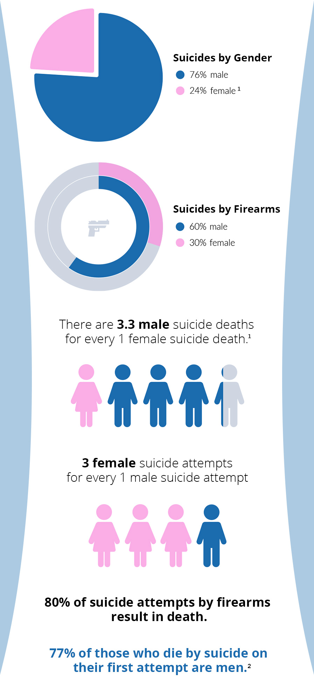
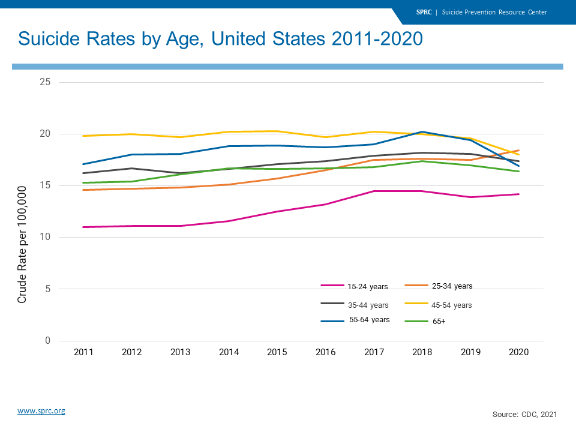

This website provides general information about a variety of mental disorders, but it is not intended to replace a professional diagnosis. Please consult the doctor for a medical diagnosis and treatment plan.
What is Suicide?
Suicide is death caused by injury to one's self with the intention of death.
9 Common myths about Suicide
Talking about suicide can encourge someone
There is a widespread stigma associated with suicide and as a result, many people are afraid to speak about it. Talking about suicide not only reduces the stigma, but also allows individuals to seek help, rethink their opinions and share their story with others.A person who was once suidical will always be suicidal
Heightened suicide risk is often short-term and situation-specific. While suicidal thoughts may return, they’re not permanent. Someone who has experienced suicidal thoughts or attempts can go on to live a long life.Suicide only affects those with mental illnesses
Suicidal behaviour indicates deep unhappiness, not necessarily a mental health issue. Many people living with mental health issues aren’t suicidal, and not all people who take their own lives have a mental health issue.Suicides usually happen without warning
Most suicides are preceded by verbal or behavioural warning signs. Some suicides occur without any obvious warning.If a person attempts and fails, they will not attempt again
A suicide attempt is regarded as an indicator of further attempts. It is likely that the level of danger will increase with each further suicide attempt.Suicidal threats and attempts are just attention seeking
Many people assume that threating or even attempting suicide is a form of attention seeking. All suicidal attempts and threats must be treated as though the person has the intent to die.All young people are suicidal
Although media does spread the idea of suicide, it does not solely cause suicides. In reality, majority of suicides come from the older generations.Suicide is painless
The fact is, many suicide methods are extremely painful. Fictional portrayals of suicide do not usually include the reality of the pain.Suicidal people are selfish
People do not die by suicide because they do not want to live. People die by suicide because they want to end their suffering. These individuals are suffering so deeply that they feel helpless and hopeless.Signs of suicidal thoughts
• Previous suicide attempt/s
• Talking about suicide
• Talking about being a burden to others
• Talking about feeling trapped or having unbearable pain
• Agitation, anxiety and/or irritability
• Trouble sleeping
• Changes in appearance
• Taking time off work/school
• A recent stressful event or loss
• Social withdrawal/feeling alienated
• Seeming preoccupied with an internal thought or problem
• Self-harm or self-injury.
Risk factors of suicide
There are many risk factors that can contribute to suicidal thoughts/attempts. The main categories of risk factors include:
Intrusive Memories
• Diagnosed mental problem• Recent or upcoming crisis
• Intimate partner problem
• Physical health problem
• Alcohol problem
• Substance abuse
• Argument
• Family problem
• Job problem
• Financial problem
• Legal problem
• Death of loved one
• Difficulty experiencing positive emotions
• Feeling emotionally numb
Facts and statistics

Link between sex and suicide
Australia 2020, there were 3,139 reported deaths to suicide. The number of male deaths in this number is 2384. Female suicide deaths is 755. This is roughly a three quaters male and a quater female.By country, the most male deaths to suicide is Lesotho, in Africa, with a total estimate of 147 out of 100000 dying to suicide. As a simplified fraction, this is equal to 1 in 680 individuals. The country with the least amount of male suicides is Antigua and Barbuda, a country in the Caribbean, at a 0.4%.
Meanwhile, the lease suicide deaths for females is in Barbados, with an estimate of 0.2 out of 100000 individuals. As it is with males, the country with the highest mortality rate of suicides is Lesotho, with approximately 35 out of 100000 females dying of suicide.

Suicide by age
It's been found that suicide is most common in the elderly and middle-ages population in most countries. Worldwide, the average age for suicide in both sexes is between the ages 30 and 50. Suicide is least common in the younger population (people aged between 5 and 14).
© Copyright 2022